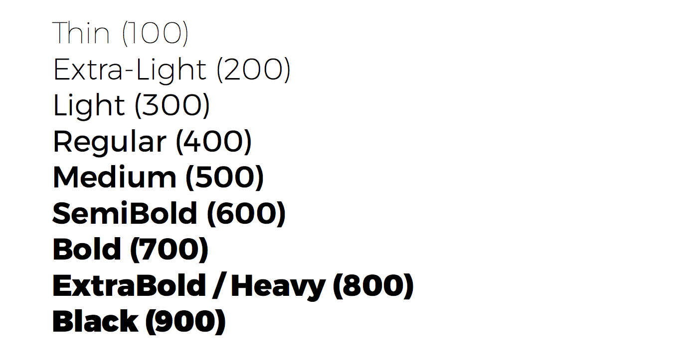
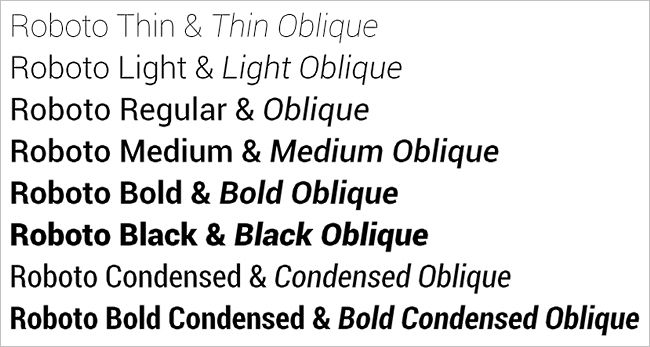
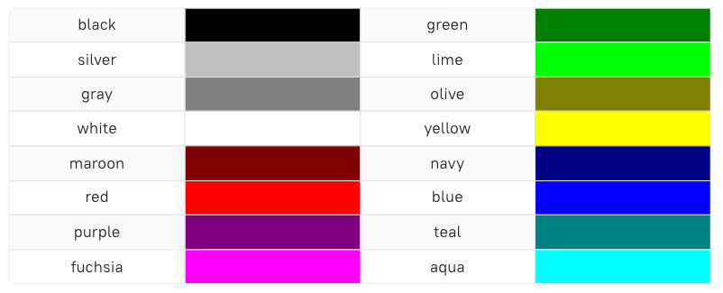

-
LES DIFFÉRENTES RÈGLES CSS À SAVOIR :
Dans cette partie du cours, nous allons vous présenter ce qu'il faut faire pour bien réussir l'esthétique de votre page Internet afin de faciliter la lecture aux utilisateurs.
Pour commencer, nous allons voir :
-
LA PROPRIETE "FONT-WEIGHT"
La propriété CSS font-weight permet de définir la graisse utilisée pour le texte. Les niveaux de graisse disponibles dépendent de la police (cf. font-family). Certaines fontes n'existent qu'avec les niveaux de graisses normal et bold
Par exemple, si vous souhaitez faire grossir votre paragraphe, vous devez appliquer la règle suivante :
p {font-weight : bold} -
LA PROPRIETE "FONT-FAMILY"
La propriété CSS font-family définit la police de caractères de l'élément. Plusieurs polices peuvent être spécifiées, séparées par des virgules. Le navigateur utilisera la première qui est disponible sur le poste. Il est recommandé de terminer cette liste par une police générique
Par exemple, si on souhaite changer la police d'un paragraphe ou d'un titre, nous devons appliquer la règle suivante :
p {font-family : cursive} -
LA PROPRIETE "COLOR"
La propriété CSS color définit la couleur de premier plan d'un élément texte et de ses éventuelles décorations. Elle définit également la valeur de currentcolor (en-US) qui peut être utilisée pour d'autres propriétés (par exemple comme valeur par défaut pour border-color).
Par exemple, si vous souhaitez changer la couleur d'un paragraphe, vous devez appliquer la règle suivante :
p {color : red} -
LA PROPRIETE "BORDER"
Les propriétés de bordure CSS vous permettent de spécifier le style, la largeur et la couleur de la bordure d'un élément.
Par exemple, pour mettre une bordure autour d'un texte ou d'un titre, vous devez appliquer la règle suivante :
p {border : solid}
-